[소식] 9월 24일丨붉은 표범을 닮은 그것, 이름은 쟁
9월 24일 업데이트에서 공개될 육쟁의 이야기와 신규 협경·시검 콘텐츠를 소개합니다.

3일 뒤인 9월 24일, 협객은 이야기 콘텐츠가 매우 풍성한 여정에 나서 주요 장과 지선 이야기를 500분 넘게 몰입해 체험하게 됩니다.
앞서 소홍수, 뤄펑춘, 링페이위, 바이우샤 네 동창을 차례로 소개했습니다. 그들의 이야기는 협객이 직접 다가가 하나씩 겪어 보기를 기다리고 있습니다.
그리고 오늘 소개할 이 인물은 협객과 처음 만나자마자 인사를 나누기도 어려울 듯합니다. 정말 ‘싸우고 나서야 서로를 알게 되는’ 사람도 있으니까요——
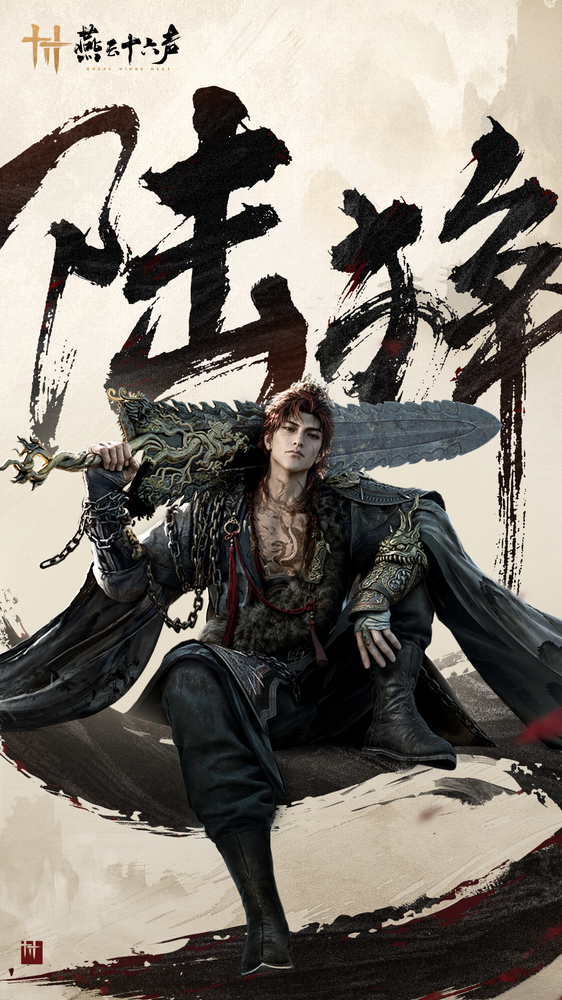
황량한 숲 밖에서 누렇게 뜬 얼굴에 바짝 마른 아이 30명이 육장결 앞에 서 있었습니다. 모두 북쪽에서 기근을 피해 내려온 유민이었습니다. 바깥에 내버려 두면 며칠도 살지 못하겠지만, 육장결은 그중 1명에게 살길을 열어 줄 생각이었습니다.
육장결가 말했습니다. “이 숲을 지나면 맞은편에 남당의 군영이 있다. 들어가서 물건 하나를 가져와라. 10일 뒤에 내가 와서 볼 테니, 가장 그럴듯한 것을 가져온 아이를 내 아들로 삼겠다.”
——‘아들’은 거궐검을 하사받던 날 봉황산이 그에게 요구한 것이었습니다. 육장결은 신하라면 목숨을 지키기 위해 무언가를 내놓아야 한다는 사실을 알고 있었습니다. 봉황산이 아들 1명을 원한다면 아들 1명을 주면 됩니다. 다만 아들을 들이는 일도 자신의 규칙에 따라야 했습니다.
천주영 병사들이 빈틈없는 인간 장벽을 이루자, 아이들은 영문도 모른 채 황량한 숲으로 들어갔습니다. 부장은 왜 하필 이런 방식으로 아이를 고르느냐고 물었습니다. 남당군에게 붙잡힌 아이들 중 1명이라도 살아 돌아올 수 있을지 알 수 없었고, 천주영 안에도 어린 나이에 영리하고 충성스러운 아이들이 분명 있었기 때문입니다. 육장결은 달이 큰 까닭은 하늘에 달이 1개뿐이기 때문이라고 말했습니다. 그는 이 ‘우아한’ 비유가 몹시 마음에 들었습니다. 그의 아들은 하늘에 하나뿐인 달이어야 했습니다.
10일이 지나자 그는 공기 중에 희미하게 감도는 피 냄새를 음미하며 부하들과 함께 들뜬 마음으로 수색을 시작했습니다. 그러나 하나뿐인 달이 떠오를 때까지 시신 몇 구만 찾았을 뿐, 살아 있는 아이는 1명도 없었습니다. 그는 포기하지 않았고, 한밤중이 되어서야 마침내 냄새를 맡았던 그 피를 찾아냈습니다.
숲속 공터에 표범 한 마리의 시신이 누워 있었습니다. 한때 아름다웠을 털은 피와 진흙으로 범벅이 되었고, 배에는 소름 끼칠 만큼 큰 상처가 벌어져 있었습니다. 육장결가 한 걸음씩 다가갔습니다. 죽은 표범의 배가 문득 움직이더니 안에서 손 하나가 나왔고, 이어 팔만큼이나 가는 다리 하나가 나왔습니다. 마침내 아이 하나가 온몸에 피를 묻힌 채 벌거벗고 달빛 아래 섰습니다. 핏빛 새끼 짐승 같았습니다. 아이가 손을 내밀자 천 조각 하나가 쥐여 있었습니다. 육장결는 그것을 받아 펼쳐 한참 들여다본 뒤에야 찢겨 나간 군기의 반쪽임을 알아보았습니다. ‘당’ 자가 희미하게 보였습니다.
말을 타고 군영으로 돌아가는 길에 육장결이 군사에게 세상에 붉은 표범이 있느냐고 물었습니다. 군사는 《산해경》에 표범을 닮은 붉은 짐승이 기록되어 있으며, ‘꼬리가 5개이고 뿔이 1개이며, 소리는 돌을 두드리는 것 같다’고 설명했습니다. 그 이름은 ‘쟁’입니다.
육장결가 고개를 끄덕였습니다. “그럼 내 아들은 육쟁이라 하자.”
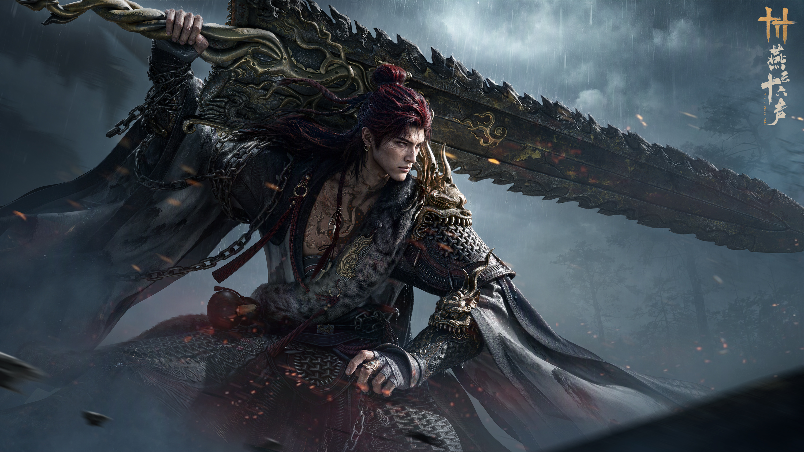
육쟁의 항저우 인질 생활은 무료하고 담담했습니다.
평란서원은 그를 예의 바르게 대했고, 항저우 사람들은 붉은 머리의 흉신 같은 그와 무서울 만큼 커다란 거궐검을 두려워했습니다. 다행히 육쟁은 남들이 자신을 어떻게 보는지 개의치 않았습니다. 애초에 그가 신경 쓰는 것은 많지 않았습니다.
연근 가루 음식에 들어간 계화 조각만은 괜찮았습니다. 넣어도 여전히 담담했지만, 그래도 조금은 맛이 났습니다. 그가 가장 좋아하는 맛은 피가 입안으로 흘러드는 맛이었습니다……입학하기 전에는 항저우에서 그 맛을 다시 볼 기회가 있을 줄은 생각도 못 했습니다.
성 동쪽에는 썩어 가는 큰 배 1척이 있었습니다. 주위에 아무도 없어 이곳에서 마침내 거궐검을 거리낌 없이 휘두를 수 있었습니다——오랫동안 우리에 갇혀 있던 야수는 이번만큼은 답답하게 서성일 필요가 없었습니다. 날카로운 발톱을 휘두르고, 살점을 물어뜯으며, 마음껏 한바탕 싸우려 했습니다.
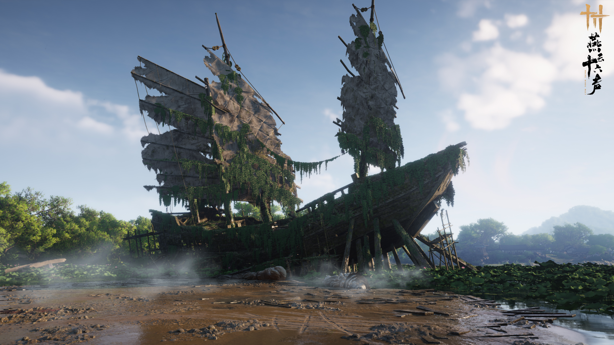
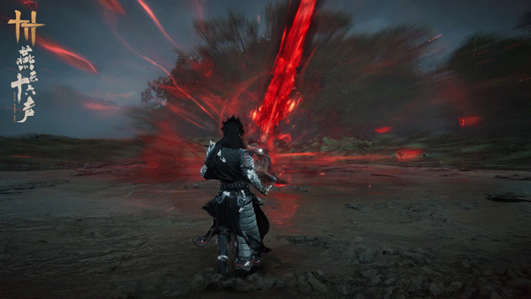
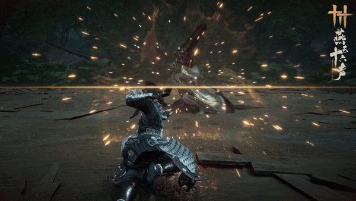
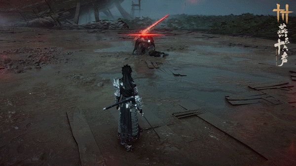
*사전 연구 단계의 효과 시연입니다. 실제 출시 내용을 기준으로 해 주세요.
9월 24일에는 새 시즌도 시작됩니다. 무도를 연마하는 길에는 검을 들고 협객 앞에 나타나는 강적도 있고, 동료들과 한마음으로 힘을 모아 돌파해야 할 위험한 난관도 있습니다.
그때 신규 협경과 시검이 등장합니다——
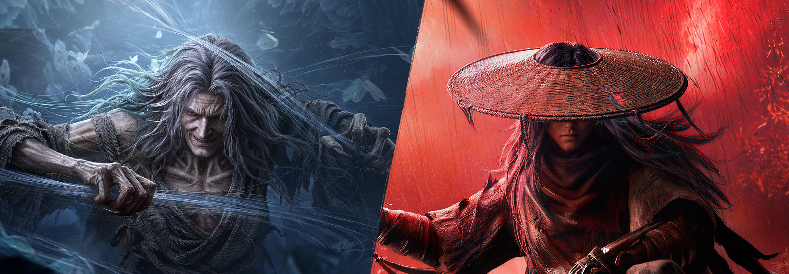
신규 시검
【창영요령】
과거 고치에서 나온 그 강적이 다시 기이한 독으로 전장을 뒤흔듭니다. 전투가 진행될수록 독성이 협객의 몸에 쌓이므로, 적절한 때 동료와 서로 독성을 옮겨야 합니다.
감염이 깊어지면 살과 피가 고치로 변해 사람을 가두고, 동료가 도와 고치를 깨 주기를 기다리게 됩니다. 하지만 이 고치가 꼭 속박만 하는 것은 아닙니다. 위협적인 필살기가 닥칠 때 스스로 고치에 들어가면 잠시 공격을 피할 수 있습니다. 독성을 한 사람에게 집중하면 그가 먼저 고치가 되게 해, 팀이 여유 있게 대응할 시간을 벌 수도 있습니다.
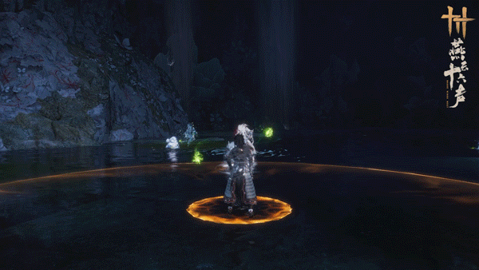
*사전 연구 단계의 효과 시연입니다. 실제 출시 내용을 기준으로 해 주세요.
고치 속 노인이 던지는 독충도 주의해야 합니다. 독충은 땅에 떨어지는 순간 터져 독액을 전장 전체로 퍼뜨립니다. 따라서 협객은 피하지 말고 침착하게 받아치기로 막아내야 합니다. 그 뒤 독충은 사람들 사이를 연달아 옮겨 다닙니다. 협객은 독충의 움직임에 맞춰 서로를 도우며 독성을 하나씩 없애야 합니다.
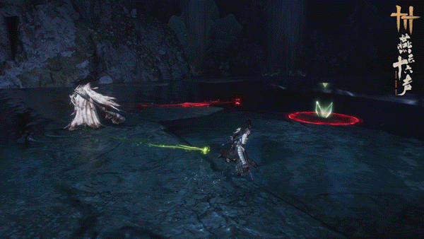
*사전 연구 단계의 효과 시연입니다. 실제 출시 내용을 기준으로 해 주세요.
추격에서 벗어난 수령객은 대나무 숲의 짙은 안개 속에서 다시 칼을 들고 섰습니다. 다만 이번 만남에는 방울 소리에 또 하나의 울림이 더해진 듯합니다.
옛 그림자가 안개 속을 떠돕니다. 협객은 수령객의 긴 칼을 경계하는 동시에, 평범한 수단으로는 건드릴 수 없는 존재들도 살펴야 합니다. 오랫동안 생사의 경계를 오간 살수인 수령객은 영혼과 육신, 두 목숨을 지녔습니다. 그를 이기려면 협객도 영규를 일으켜 그와 맞서며 목숨이 경각에 달린 기분을 제대로 맛보아야 합니다.
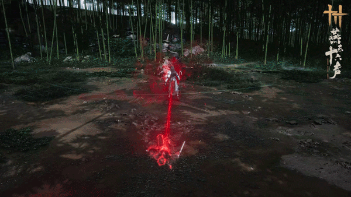
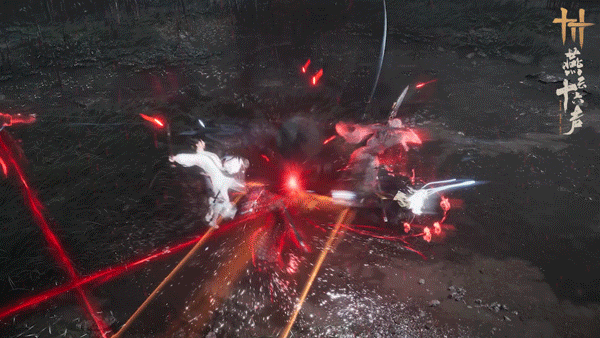
*사전 연구 단계의 효과 시연입니다. 실제 출시 내용을 기준으로 해 주세요.
전투가 위태로운 지경에 이르면 협객은 영규를 잠시 몸에서 떼어 내 위험한 곳으로 들어가 적과 맞설 수 있습니다. 누군가는 그 자리에 남아 방비되지 않은 동료의 몸을 지켜야 합니다. 한 생각으로 몸을 벗어나고, 한 생각으로 돌아오니 다섯 사람의 생사도 이로써 단단히 연결됩니다.
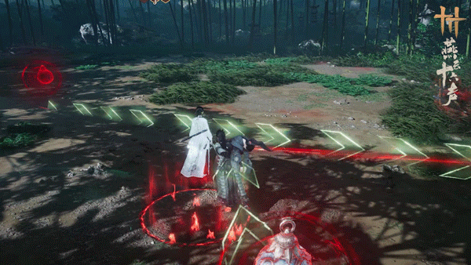
*사전 연구 단계의 효과 시연입니다. 실제 출시 내용을 기준으로 해 주세요.
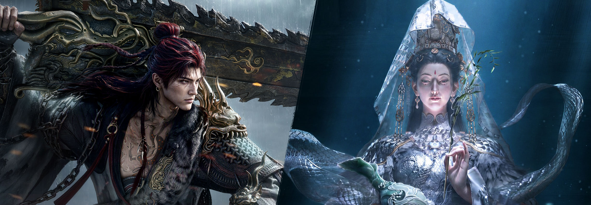
신규 협경
【봉예단미광】
시검의 난관을 넘으면 협경에서 또 다른 시련이 기다립니다. 거대한 검을 공중에 든 강적 육쟁이 거궐검을 들고 다시 나타납니다.
육쟁이 거대한 검을 휘두르기도 전에 묵직한 검의 기세가 전장을 뒤덮습니다. 바다를 가르고 하늘을 여는 위세는 막을 수 없고, 거검의 참격이 연이어 밀려옵니다. 열 명이 검풍이 가장 거센 곳에서 진형을 지켜야 반격할 잠깐의 틈을 얻을 수 있습니다.
거검이 내리칠 때 협객은 양쪽으로 나뉘어 한마음으로 받아쳐야 합니다. 양쪽의 힘이 균형을 잃으면 검날이 힘이 빈 쪽으로 향해 휩쓸며 살아날 길을 끊는 일격을 가합니다. 검을 가로로 휘두를 때에도 모두가 칼날을 마주하고 이를 악물고 힘을 합쳐, 눈앞으로 밀려오는 천근의 검압을 버텨야 합니다. 맞설 때마다 상처는 더욱 깊어집니다. 그래도 마음이 흩어지지 않아야 검을 받아내고 위기를 돌파할 기회가 생깁니다.
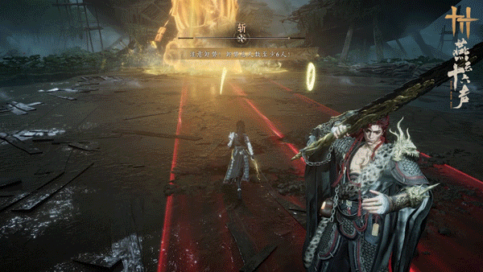
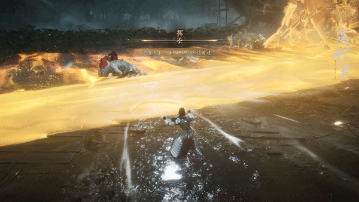
*사전 연구 단계의 효과 시연입니다. 실제 출시 내용을 기준으로 해 주세요.
거궐검의 산을 뒤흔드는 위세를 경험하고 나면, 전혀 다른 시련이 오래전부터 협객을 기다리고 있습니다.
청병거사는 옥병을 들고 있지만, 퍼뜨리는 것은 환각을 일으키는 안개입니다. 그녀의 인도는 보호가 될 수도, 협객을 광적인 열기 속에서 돌이키기 어려운 길로 이끌 수도 있습니다. 환각에 빠지고, 집착하며, 광기에 이르기까지……환각의 장벽에 휘감긴 정도에 따라 전황도 달라집니다.
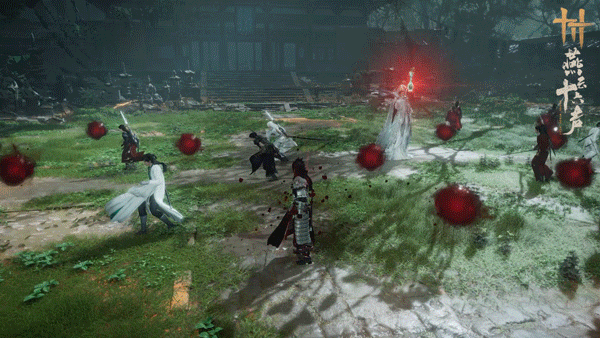
*사전 연구 단계의 효과 시연입니다. 실제 출시 내용을 기준으로 해 주세요.
집착에 빠진 사람은 보통 사람에게 보이지 않는 위험을 볼 수 있고, 동료를 보호해 잠시 위기를 막을 수도 있습니다. 그러나 선을 넘으면 광기에 사로잡힌 협객은 잠시 고통을 두려워하지 않게 되는 대신, 원래 나란히 싸우던 동료에게 무기를 겨눌 수도 있습니다. 한 생각으로 선을 향하고, 한 생각으로 집착에 빠집니다. 옥병이 기울 때 협객은 본심을 지킬 수 있을까요?
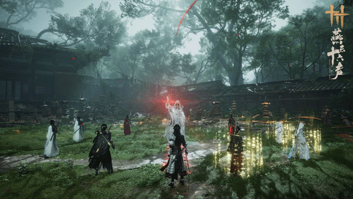
*사전 연구 단계의 효과 시연입니다. 실제 출시 내용을 기준으로 해 주세요.
새로운 벗과 함께 강호의 일을 겪고, 동료들과 손잡고 난관을 넘으며, 다채로운 콘텐츠가 9월 24일 협객을 기다립니다.
앞으로 협객 여러분께 신규 외형과 신규 수호 콘텐츠에 관한 사전 정보도 전해 드릴 예정이니, 이후 소식에도 많은 관심 부탁드립니다!